.gif "Regresar a la página principal.")
Tiene una variedad de enemigos, como Creepers, Zombies, Endermans y Esqueletos. Cada monstruo tiene habilidades únicas y ofrece desafíos diferentes al jugador
|
|
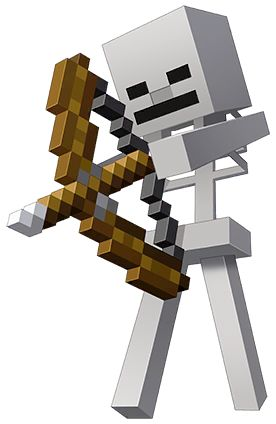 | 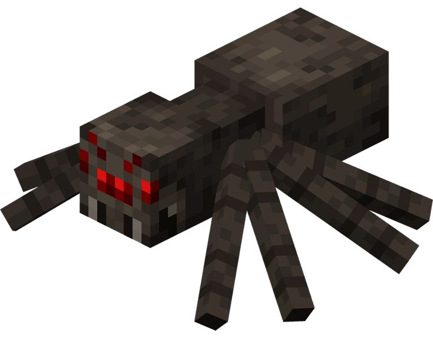 |
| Creeper: Criatura silenciosa que se acerca sin ser detectada. Explota al estar cerca del jugador, causando daño y destruyendo bloques, pero no emite ningún sonido hasta que está a punto de detonar. | Zombi: Ataca cuerpo a cuerpo al jugador y puede romper puertas en dificultad alta. Si ataca a un aldeano, lo convierte en zombi aldeano. Suelen aparecer en grupos. | Esqueleto: Dispara flechas desde la distancia con un arco. Es más peligroso a distancia y puede equipar armaduras o herramientas para volverse más resistente. | Araña: Hostil por la noche o en la oscuridad. Puede trepar paredes y atacar rápidamente. Tiene más probabilidades de aparecer con efectos de pociones. |
 |
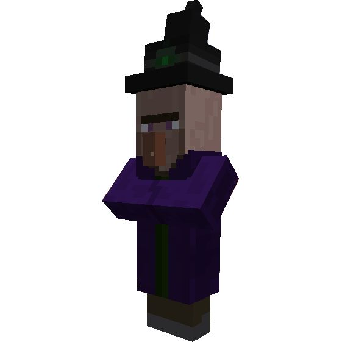 | 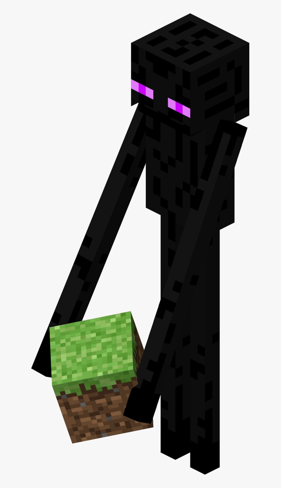 | 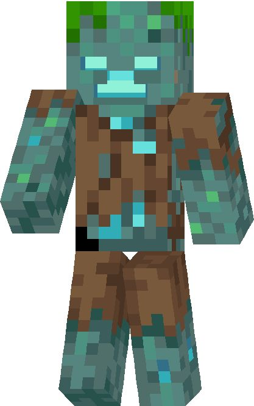 |
| Araña de cueva: Una versión más pequeña de la araña, pero muy peligrosa por su veneno, que reduce gradualmente la salud del jugador. | Bruja: Utiliza pociones para dañar al jugador, ralentizarlo o envenenarlo. También puede curarse usando pociones de regeneración, lo que las hace difíciles de derrotar. | Enderman: Criatura alta que ataca solo si se le mira directamente o se le golpea. Se teletransporta constantemente y puede recoger y colocar bloques. | Ahogado: Variante acuática del zombi que aparece en el agua o cuando un zombi permanece sumergido. Puede arrojar tridentes a distancia, lo que los hace letales. |
| 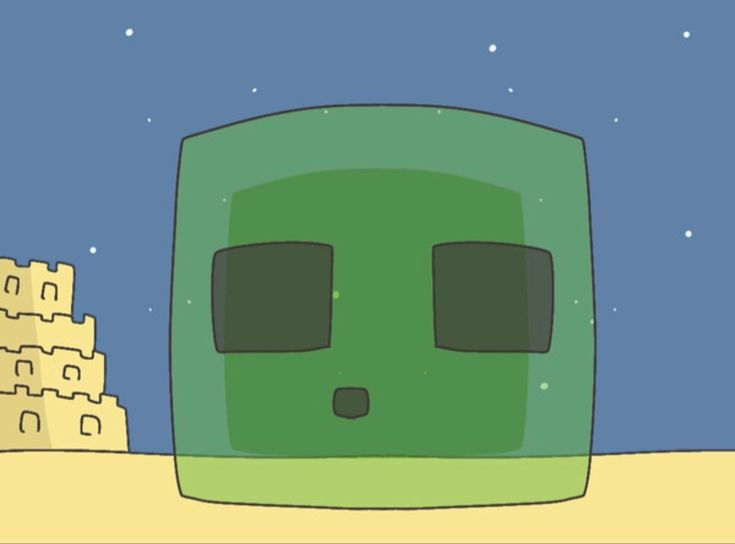 |  |
| Slime: Aparece en biomas específicos o capas subterráneas. Salta hacia el jugador y, al ser derrotado, se divide en versiones más pequeñas que continúan atacando. | Phantom: Criatura voladora que aparece en el cielo después de que el jugador no duerma durante tres noches seguidas. Ataca en grupo y es difícil de golpear. |
| 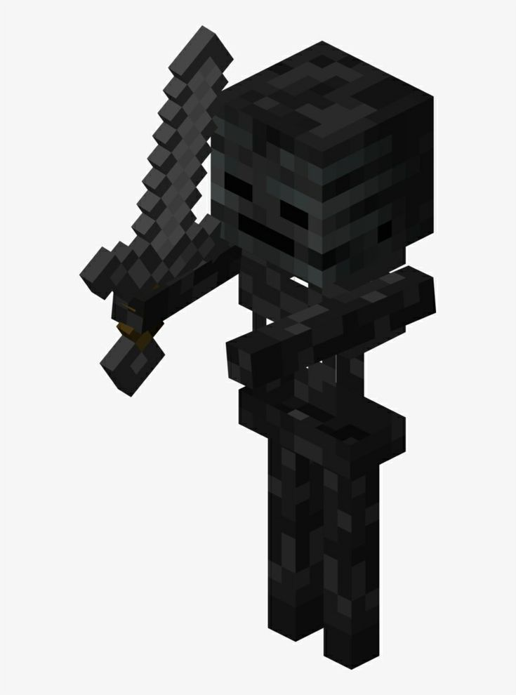 |  |
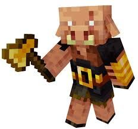 | 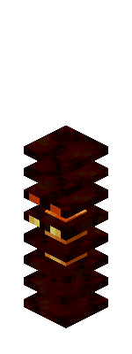 |
| Esqueleto Marchito: Variante oscura del esqueleto que usa una espada. Al golpear, aplica el efecto "marchitamiento", que drena la salud del jugador gradualmente. | Blaze: Flota en el aire y lanza bolas de fuego. Suelen estar protegidos por fortalezas del Nether, haciendo su combate aún más desafiante. | Piglin Bruto: Una versión más fuerte de los piglins que ataca de inmediato, incluso si el jugador lleva armadura de oro. Son extremadamente agresivos y resistentes. | Magma Cube: Similar al slime, pero de fuego. Salta hacia el jugador y se divide en cubos más pequeños, que también atacan y causan daño. |
 |
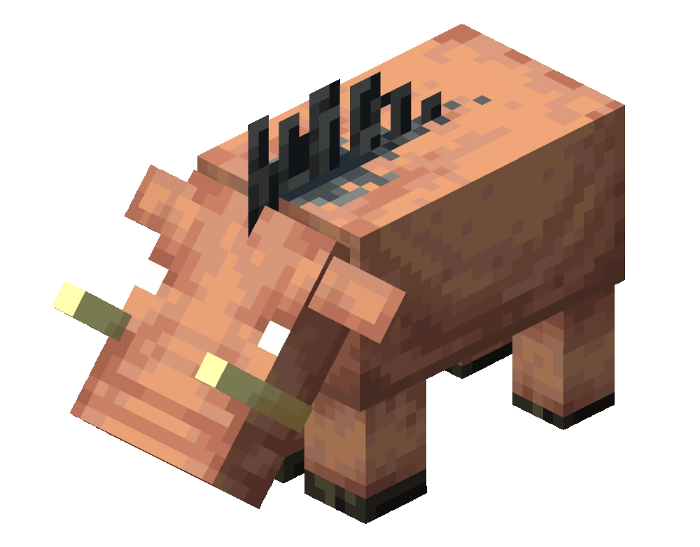 | 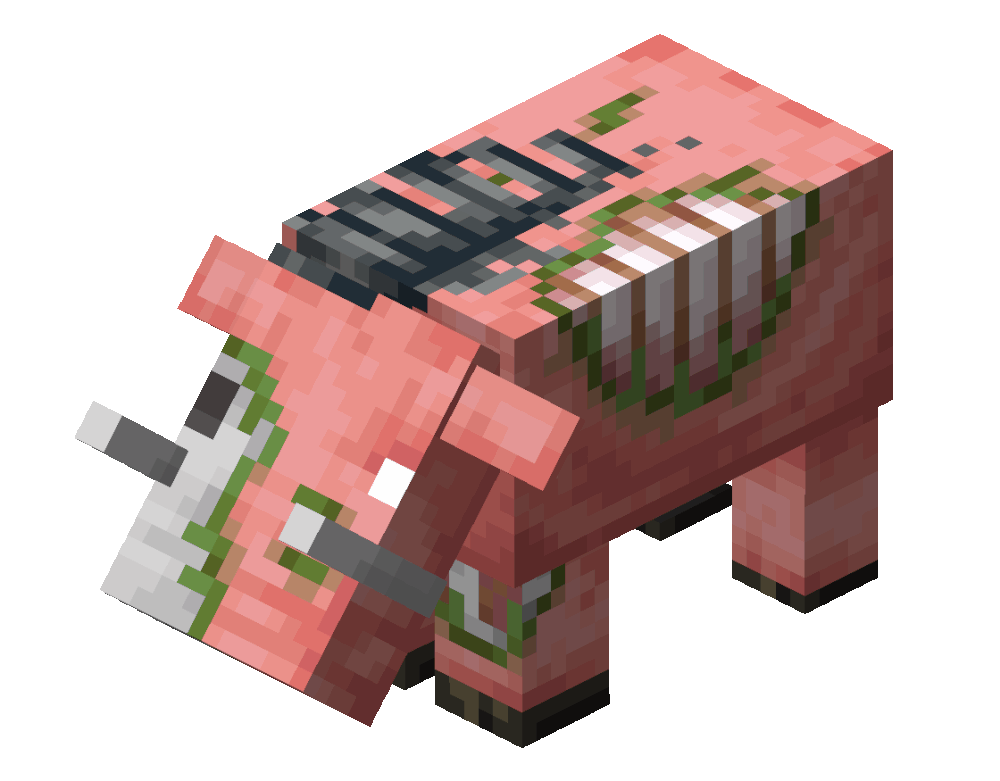 |
| Piglin Zombificado: Normalmente neutral, pero si uno es atacado, todos los piglins zombificados cercanos se vuelven hostiles y atacan en grupo. | Hoglin: Bestia grande y agresiva que embiste al jugador en los biomas del Nether. Puede ser domesticado como "Zoglin" al ser llevado al Overworld. | Zoglin: Una versión zombificada del Hoglin que ataca a todo lo que encuentra, incluido el jugador, aldeanos y otros mobs. |
 |
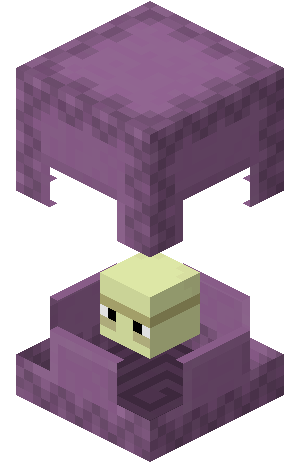 |
| Ender Dragon: El jefe final del juego. Ataca al jugador con aliento de dragón, embestidas y bolas explosivas. Requiere estrategia y habilidad para derrotarlo. | Shulker: Se esconde dentro de bloques en las ciudades del End. Dispara proyectiles guiados que causan el efecto de levitación, lo que puede ser peligroso si el jugador cae desde una gran altura. |
| 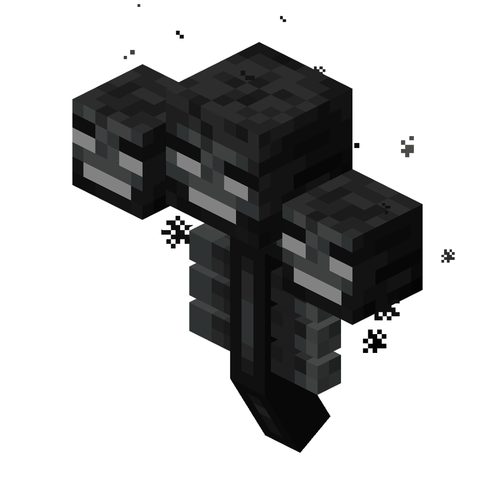 |  |
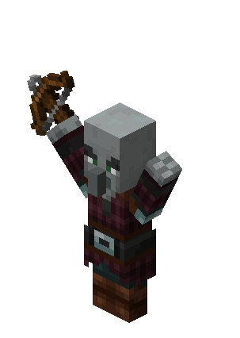 | 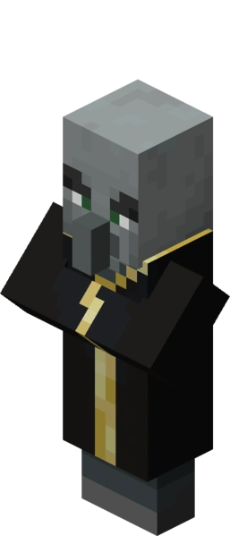 |
| Wither: Jefe invocado por el jugador usando cabezas de esqueleto marchito y arena de alma. Lanza explosiones y causa marchitamiento. Es extremadamente poderoso y puede destruir grandes áreas. | Warden: Un mob ciego que aparece en el Deep Dark. Detecta al jugador mediante vibraciones y olores. Es increíblemente fuerte y difícil de derrotar, diseñado para ser evitado más que combatido. | Pillager: Miembro de las patrullas que usa ballestas para atacar. Aparece en incursiones y cerca de puestos de avanzada. | Evoker: Hechicero que invoca fangs mágicos y Vexes (espíritus hostiles). Es una de las mayores amenazas en las incursiones. |
| 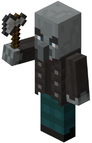 | 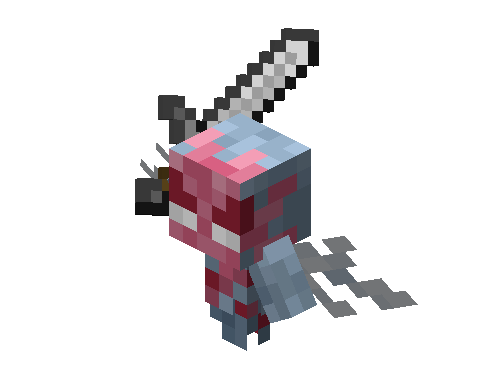 | 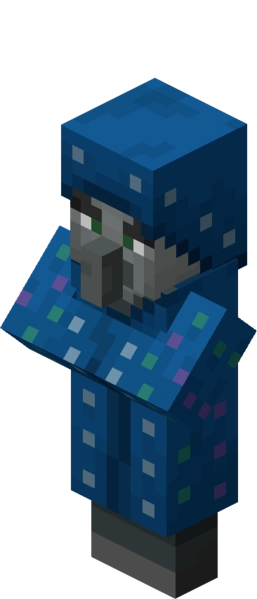 | 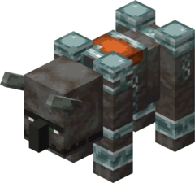 |
| Vindicator: Empuña un hacha y persigue al jugador agresivamente. Puede causar mucho daño en poco tiempo. | Vex: Espíritus invocados por los evokers. Pueden atravesar bloques y atacar con rapidez y precisión. | Illusioner (Solo por comandos): Un mago que crea clones de sí mismo y dispara flechas, confundiendo al jugador. | Ravager: Criatura grande y fuerte que aparece en incursiones. Puede embestir y destruir bloques, además de causar un gran daño. |


Anterior --------------Inicio